<section class="gallery">
    <h2>Gallery</h2>
    <div class="gallery__tabs tabs">
        <button class="tabs__tab-item--link tabs__tab-item--link-default">Summer</button>
        <button class="tabs__tab-item--link">Winter</button>
        <button class="tabs__tab-item--link">Spring</button>
        <button class="tabs__tab-item--link">Autumn</button>
        <button class="tabs__tab-item--link">Fishing</button>
        <button class="tabs__tab-item--link">Spa</button>
        <div class="tabs__tab-content tab-content-summer">
            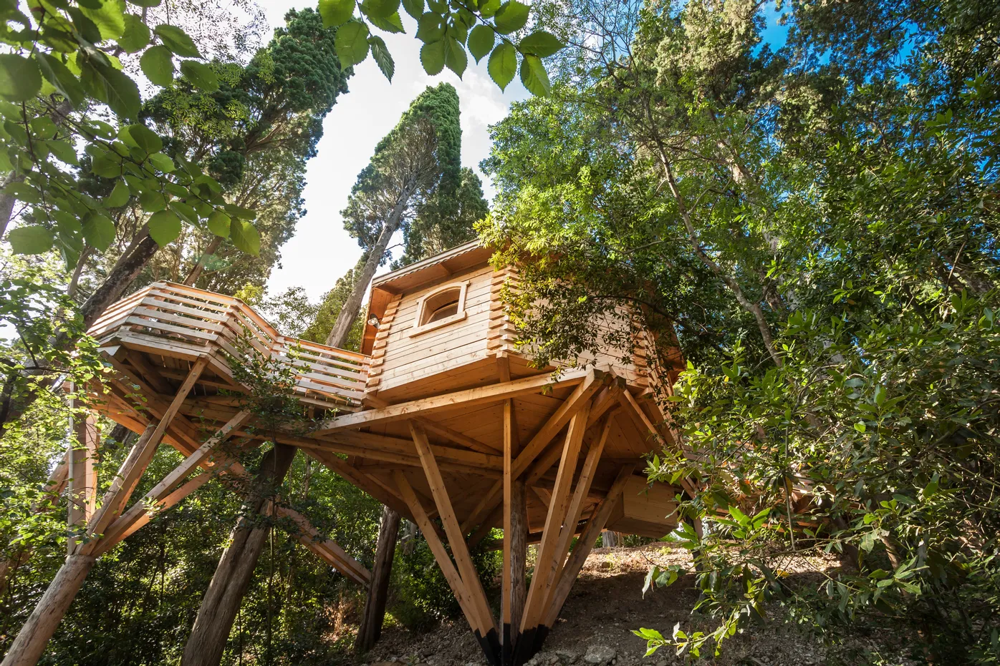
            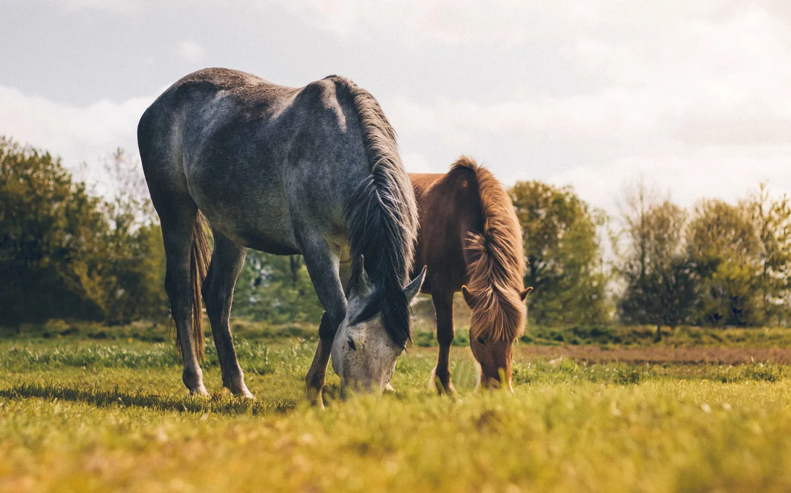
            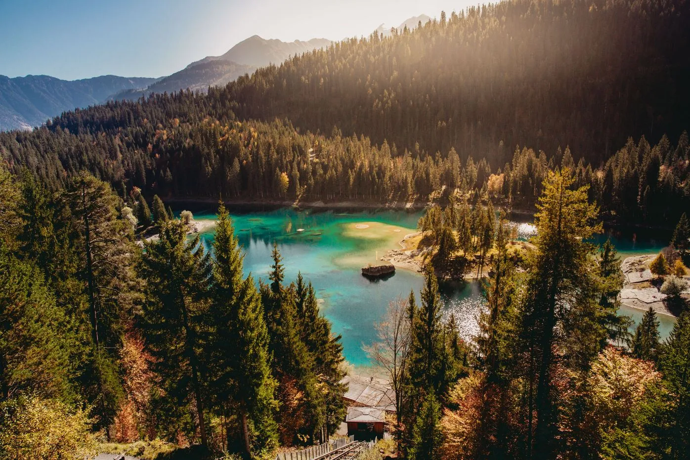
            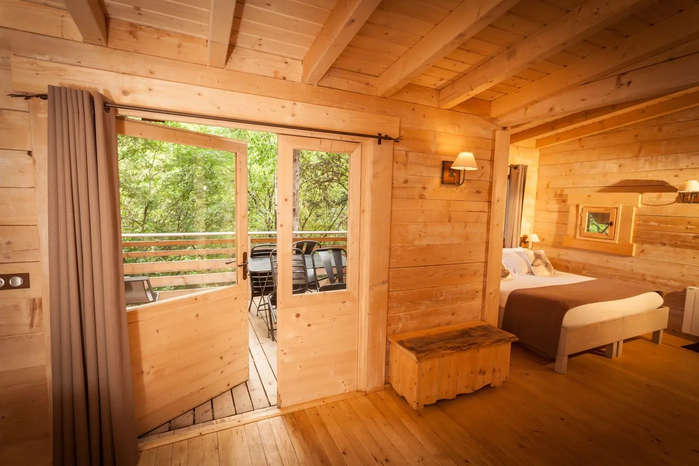
            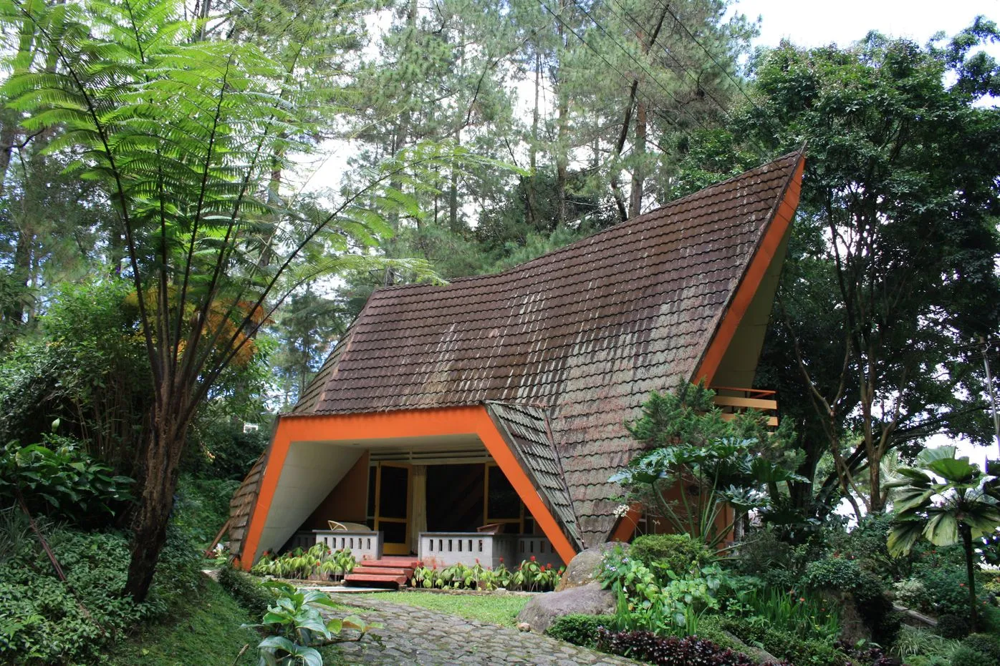
            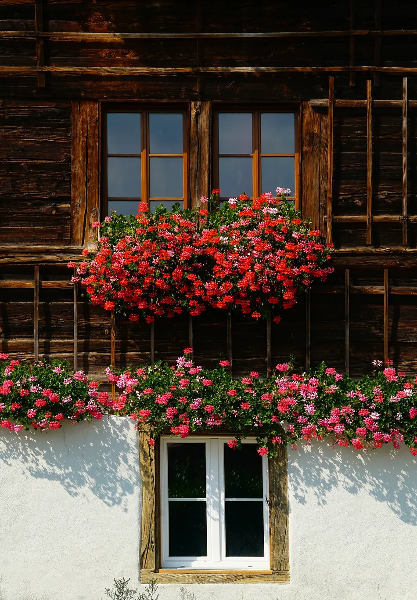
        </div>
        <div class="tabs__tab-content tab-content-winter">
            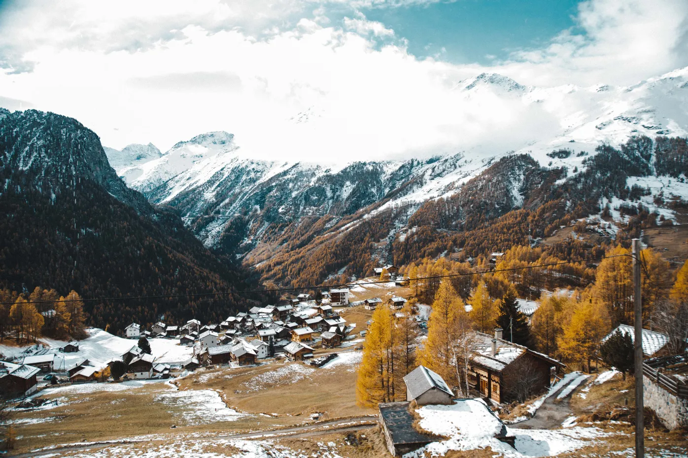
            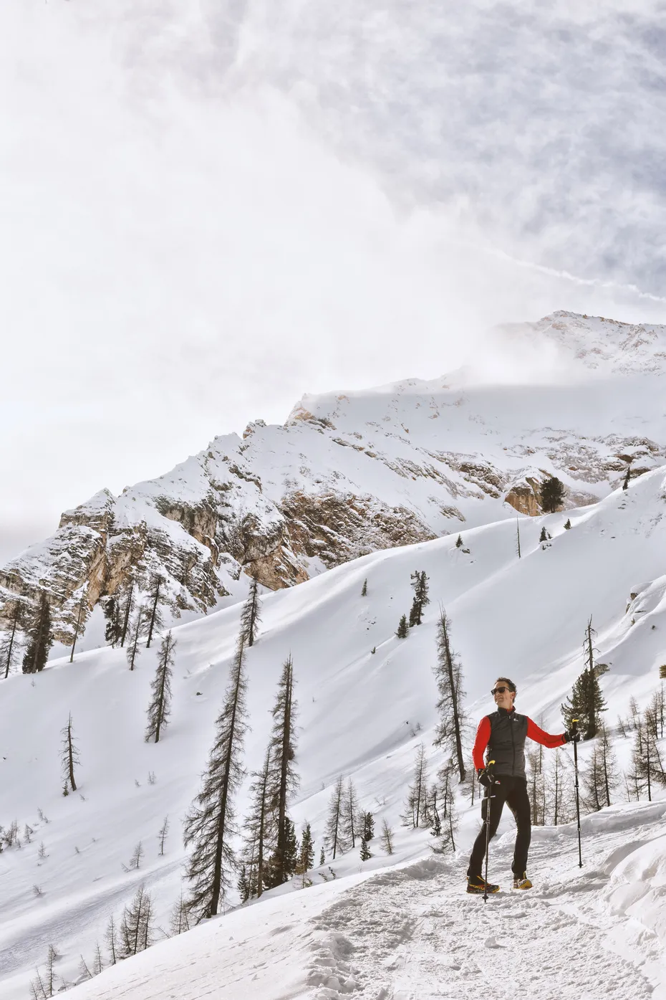
            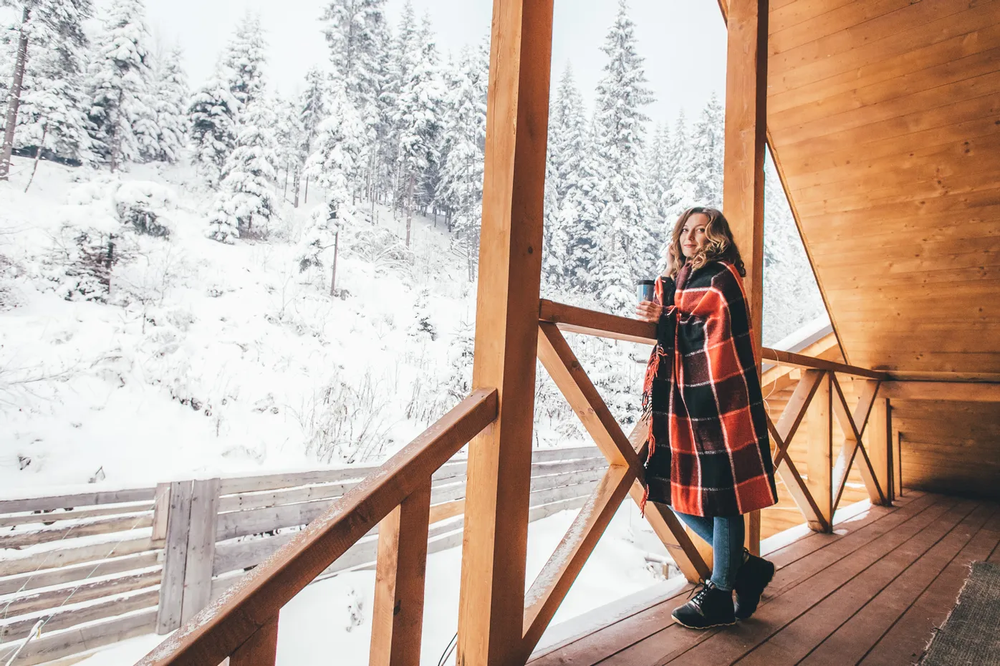
            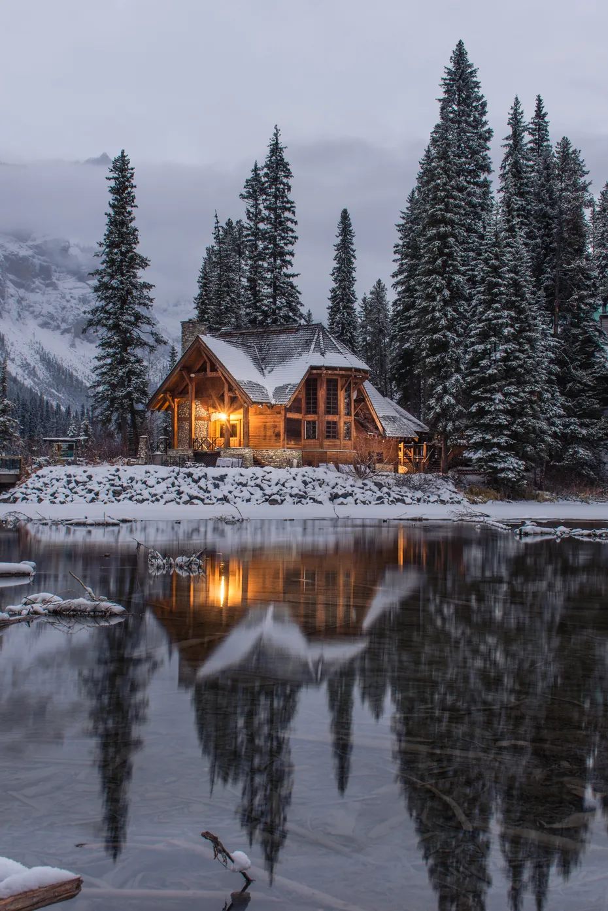
            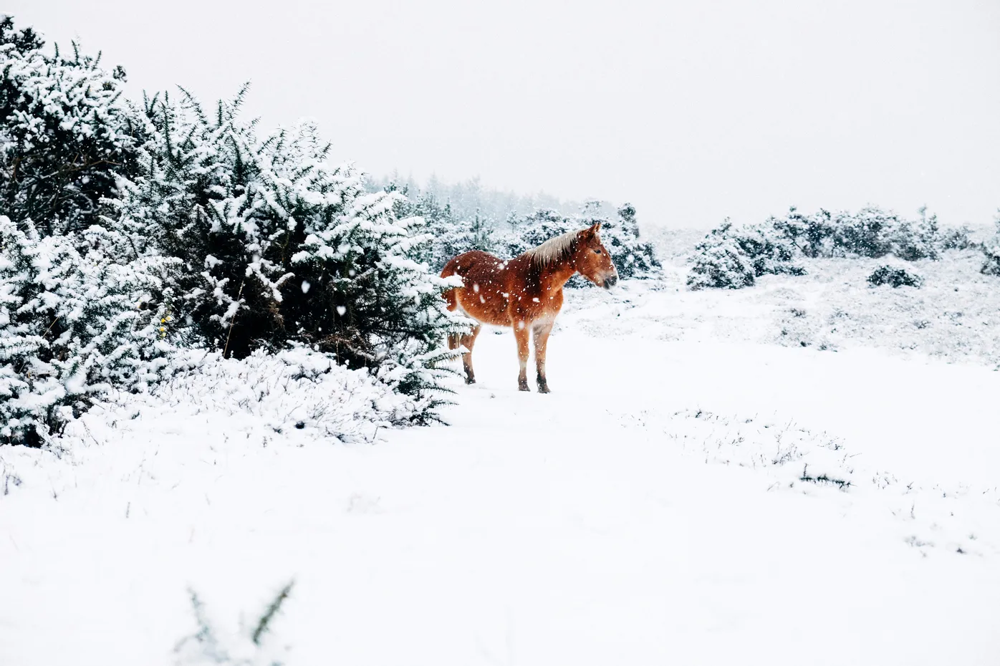
            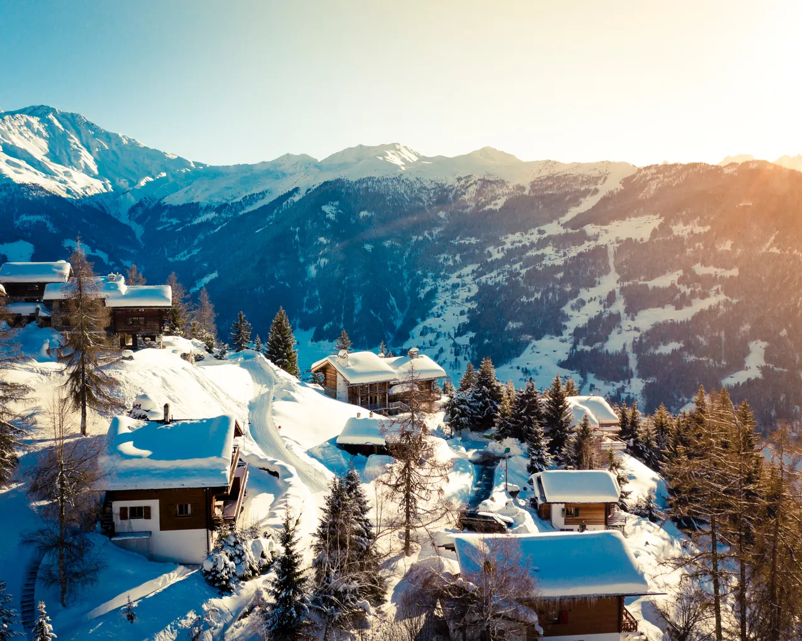
        </div>
        <div class="tabs__tab-content tab-content-spring">
            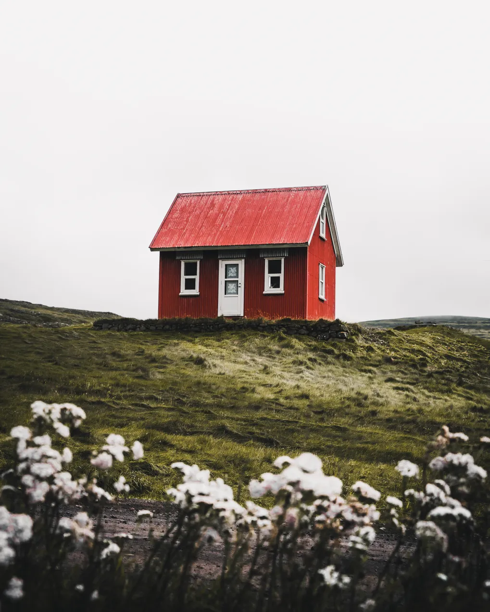
            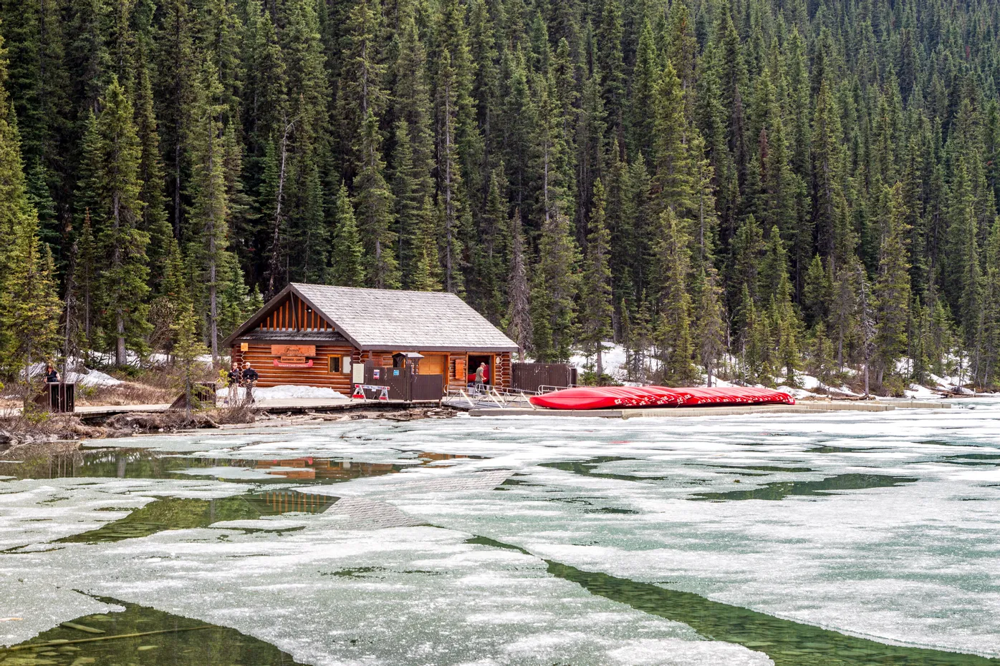
            
        </div>
    </div>
</section>